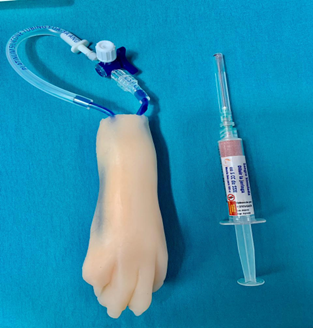
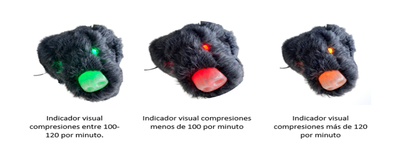
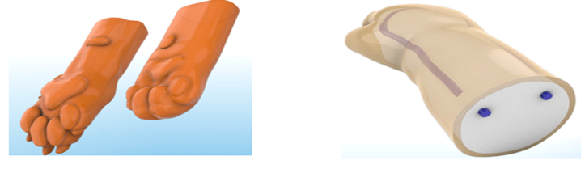
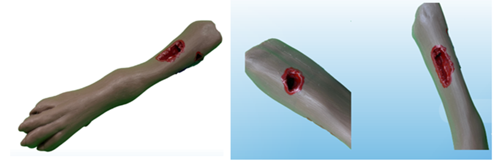
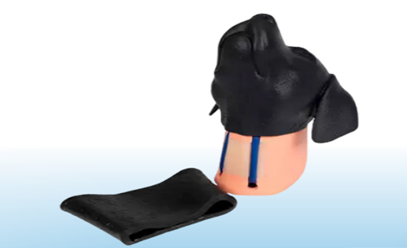

Técnico Laboral en Competencias de Auxiliar Veterinario y Cuidado Animal (Especies Menores)
En 2023, la ESAC actualizó su enfoque para ofrecer nuevos programas laborales, cambiando su denominación y objeto social. Ha colaborado con fundaciones en Girardot para apoyar animales en situación de calle y ha trabajado con la clínica Veterinaria SPEI DOMUS para crear un programa de formación debido a la escasez de personal cualificado en veterinaria. La tabla anexa detalla ocupación, normas y funciones del personal.
-
Practicas Academicas
Las prácticas académicas permiten a los estudiantes aplicar conocimientos teóricos en un entorno real. Ofrecen experiencias prácticas y formación en técnicas avanzadas, mejorando la preparación para el mundo laboral.
-
Laboratorios (Móviles)
Los laboratorios móviles enriquecen el programa académico al llevar equipos de investigación a distintas ubicaciones, permitiendo a los estudiantes realizar experimentos y análisis en campo y acceder a tecnología avanzada.
Instrumentos de Laboratorio
Explora los materiales que utilizaremos en nuestros laboratorios. Estos simuladores avanzados proporcionan una experiencia práctica y realista, ayudándote a desarrollar habilidades esenciales en procedimientos veterinarios. Desde la venopunción hasta la reanimación cardiopulmonar, nuestros equipos te prepararán para enfrentar desafíos clínicos reales con confianza y precisión.
Simulador acceso venoso cefálico canino
Este simulador permite practicar la inserción de catéteres intravenosos en la vena cefálica de los perros. Es ideal para estudiantes y profesionales veterinarios que necesitan mejorar sus habilidades en venopunción y manejo de acceso venoso.
Simulador para RCP - Canino
Este dispositivo está diseñado para la práctica de reanimación cardiopulmonar (RCP) en perros. Incluye características realistas como el pecho que se eleva y desciende, permitiendo a los usuarios practicar compresiones torácicas y ventilación artificial en escenarios de emergencia.
Simulador Venopunción Canino y Felino
Este simulador permite practicar la venopunción en perros y gatos. Es ideal para enseñar la técnica correcta de inserción de agujas en las venas de las extremidades y mejorar la precisión y la confianza de los estudiantes en procedimientos clínicos.
Simulador Pata Canina de Control de Hemorragia y Vendaje
Este simulador está diseñado para practicar el control de hemorragias y técnicas de vendaje en la pata de un perro. Es útil para entrenar a estudiantes y profesionales en el manejo de heridas traumáticas y la aplicación adecuada de vendajes para detener el sangrado.
Simulador Toma de Muestras Canino Vena Yugular
Este simulador permite la práctica de la toma de muestras sanguíneas de la vena yugular en perros. Proporciona una experiencia realista para aprender la técnica adecuada de extracción de sangre, mejorando la destreza y confianza en procedimientos veterinarios.
Perfil Ocupacional
Conoce nuestro perfil ocupacional: Descubre las habilidades y competencias que nuestros egresados desarrollan para destacar en su área profesional.
Perfil Ocupacional
El Técnico Laboral en Auxiliar Veterinario y Cuidado Animal apoyará al médico veterinario en clínicas de pequeños animales, principalmente perros y gatos. Su rol incluye la atención en consulta, la estancia hospitalaria, y los cuidados de alimentación y medicación bajo las directrices del veterinario. Será responsable del bienestar y la limpieza de los animales, y coordinará el trabajo técnico y operativo. Además, podrá integrarse en equipos de emergencias veterinarias, manejando insumos, instrumental y medicamentos, siempre siguiendo protocolos legales y éticos.

Competencias Básicas
Las competencias básicas combinan conocimientos, habilidades y destrezas, integrando el saber, hacer y ser, y se basan en las habilidades cognitivas del estudiante. Aunque se desarrollan durante la formación inicial, la ESAC se enfoca en fortalecer y continuar estas competencias para promover el desarrollo personal y laboral.

Competencias Ciudadanas
En la Constitución Política de Colombia de 1991 se comprometió a promover prácticas democráticas en todas las instituciones educativas para enseñar principios de participación ciudadana. Las competencias ciudadanas abarcan conocimientos, habilidades cognitivas, emocionales y comunicativas para actuar constructivamente en una democracia. La ESAC, en su tabla de competencias ciudadanas, se enfoca en formar a los estudiantes a través de prácticas académicas y la colaboración con actores locales, además de capacitar a su planta docente. Busca desarrollar habilidades que contribuyan a una democracia respetuosa del bien común, fomentando la participación en el gobierno escolar y otros comités con representación de estudiantes, docentes, egresados y el sector real.

Competencias Laborales Generales
Las competencias laborales generales incluyen conocimientos, habilidades y actitudes que permiten a los estudiantes desenvolverse efectivamente en cualquier entorno productivo, sin importar el sector. Estas competencias son esenciales debido a los rápidos cambios tecnológicos y la necesidad de adaptación constante. La ESAC orienta su acción educativa mediante la revisión curricular, el diseño de estrategias metodológicas y de evaluación, y la implementación de prácticas académicas en el sector productivo, para asegurar que los estudiantes desarrollen estas competencias.
Competencias Laborales Específicas
Las competencias laborales específicas se enfocan en la educación para áreas de ocupación concretas, relacionándose con conocimientos y habilidades particulares. Estas competencias se desarrollan a partir de discusiones en mesas sectoriales con representantes del sector real, y guían a la ESAC en la definición de saberes, criterios de desempeño y metodologías para los programas de formación. La ESAC organiza su currículo para asegurar que la enseñanza y el aprendizaje se alineen con estas competencias, estructurando estrategias con la comunidad académica y presentando los contenidos básicos, metodologías y criterios de evaluación en el programa correspondiente.
Plan de Estudios
Conoce nuestro Plan de Estudios
CICLO I
CICLO II
CICLO III
Galeria
Explora nuestra galería y descubre nuestro cautivador trabajo plasmado en imágenes. Cada foto cuenta una historia única. ¡Bienvenido a nuestra visión creativa!


Convenios práctica académica
Conoce nuestro perfil ocupacional: Descubre las habilidades y competencias que nuestros egresados desarrollan para destacar en su área profesional.
Certificación
Mediante la Resolución No. (por confirmar resolución), se renueva el programa de Técnico Académico en Investigación Judicial y Criminalística de la Escuela Superior de Alta Criminalística ESAC S.A.S
Contactanos
Ubicacion:
Cl. 19 #11-52 Girardot, Cundinamarca
Correo:
secretaria@criminalisticaesac.edu.co
Celular:
313 4209326 - 313 4209374